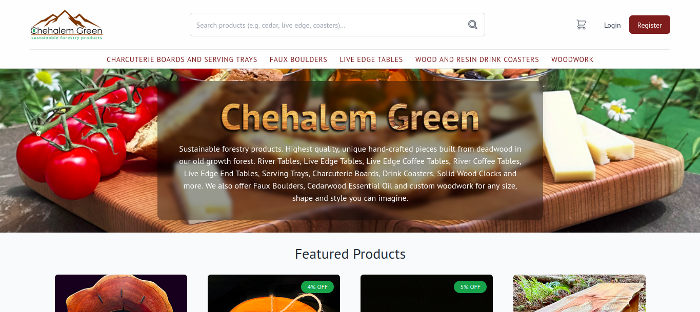
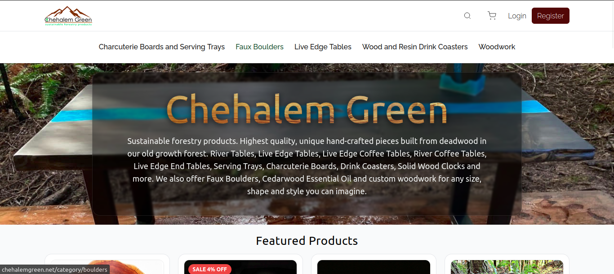
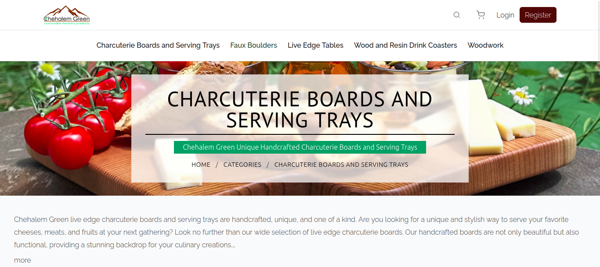
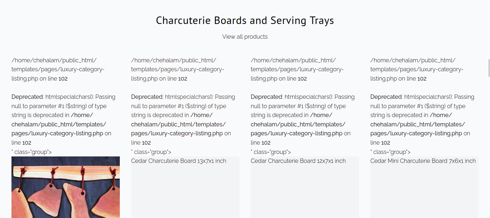
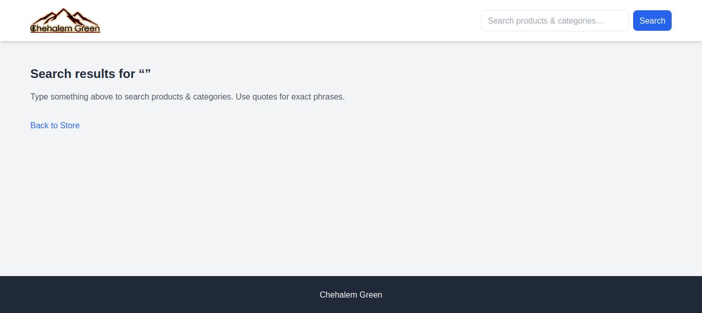

Rebuilding a 180MB broken ecommerce site into a 37MB fast custom PHP system

Client
Chehalem Green - a handcrafted sustainable wood products business
Project Overview
Chehalem Green originally ran on a heavily modified legacy PHP system that had grown unstable over time. The site was difficult to maintain, slow to edit, and prone to breaking from even basic changes.
I was brought in to audit the system and help stabilize it. After a technical review, it became clear that the existing architecture was beyond repair. So we rebuilt it from the ground up.
Problems with the original system
Before the rebuild, the site suffered from:
- Extremely large and bloated file size (180+ MB, 3000+ files)
- Redundant templates and conflicting PHP logic (1000+ violations from static analysis)
- Broken and fragile navigation
- Unused CSS and inconsistent styling
- Unreliable page rendering
- Difficult administrative workflow
- Risk of crashes from simple edits
Some images that demonstrate the old site:




The system had reached a point where improving or extending it would only make it more unstable.
My Approach
I barely knew anything about PHP, other than simple backend stuff or PHPMailer. Before I received the repo over FTP, I spun up a quick local LAMP stack (PHP + MariaDB) that handles image uploads. It was kind of like a warmup to me.
When I received the repo, I did it on a VM for security reasons, then I copied everything to my local machine. The project was so huge and had many files that I didn't know where to start auditing and fixing it.
Before I even started anything, I noticed that certain pages, such as product.php can break the whole site, so I flagged the client about that while I started to audit the codebase, mainly to recognize redundancies and file structure so I can either minimize what I've got or build almost everything from the ground up.
I'd found out that the site was very fragile, with a primitive non-standard MVC-style architecture, phpmetrics reported 1035 violations including 505 errors, multiple exec() calls were found throughout the codebase, many obsolete + unused + empty files, and 59% of the project's size contained only images, some of which were duplicated.
That's why I suggested a clean rebuild, which the client had agreed on.
Solution
I designed and built a completely new custom PHP architecture focused on:
- Simplicity
- Maintainability
- Performance
- Minimal dependencies
- Clean separation of logic and templates
So we cloned the system's core functionality and layout, instead of fixing the broken one, into a fresh and lightweight codebase.
What I Built
- Custom PHP core (no bulky CMS or plugins)
- Clean, minimal templating structure
- Dynamic product pages
- Admin panel for product management
- User authentication
- Contact system
- Payment system integration (Stripe / PayPal ready)
- Optimized database structure
- Front-end rebuild for speed and responsiveness
Results
The final system:
- Reduced the website size from 180MB -> 37MB
- Loaded pages significantly faster
- Eliminated redundant and unused code
- Made editing and maintenance substantially easier
- Produced a stable architecture ready for long-term growth
Note: I started by building the frontend mockups as static HTML files first, then I moved to the backend and chose SQLite for its simplicity, but I went back migrating to MySQL for client requirements (to use phpMyAdmin). I then did some small layout cleanups, hosted the site locally on https://kerochan.lol:8000. I finally moved to the backend, where I rewrote cart, auth, and added Stripe integration which hadn't existed before. My backend build was also deployed on a staging site of Chehalem Green with its own credentials, before it was finally done.
Client Testimonial
"Kerochan scripted a completely new custom PHP website identical in form and function to the old site, but without the redundant files, templates, and broken logic.
Pages load faster, images display better, and the system is now easy to edit and maintain.
I have worked with dozens of developers over the years and Kerochan is by far the most efficient and easiest to communicate with."
Tech Stack
- PHP (Custom Core)
- MySQL
- HTML / CSS / Tailwind
- JavaScript
- Stripe API
- FTP / Server deployment
My Role
- System auditing
- Architecture redesign
- Backend development
- Frontend rebuild
- Database design
- Payment integration
- Deployment support
Timeline
Several weeks of iterative development, testing and collaboration.
Summary
This project focused on removing complexity instead of adding features. We achieved better performance and long-term flexibility for a growing ecommerce business by rebuilding the system from scratch.